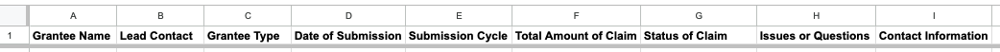

Show code
base::library(dplyr)April 22, 2024
HB 4082 provides $30M of Summer Learning Grants for underserved students in 2024. Learn to track grants in Google Sheets or R for clear analysis and insights.
(image)
The Federal Systems Team is piloting a new Summer Learning Grant Program to support historically underserved students, backed by HB 4082 and $30 million in funding. With a requirement for detailed expenditure reports, the program aims to ensure equitable access to high-quality summer programming. In response, this post provides a step-by-step guide to building a comprehensive tracking system for grant submissions, both in Google Sheets and R.
First, we’ll set up the core structure of the tracking system in each tool, ensuring all essential fields are included. Then, we’ll create a set of fake data to analyze submission frequency, identify potential issues, and review expenditure reports efficiently. Whether you’re familiar with spreadsheets or ready to explore the analytical power of R, this guide will offer insights to help streamline your grant management workflow.
Setting up the Tracking System
Requirements
Google Sheets
R
Requirements
Develop a tracking system that includes the following:
Grantee name and lead contact
Grantee type (e.g., district, ESD, consortium)
Date of submission
Submission cycle (i.e. weekly, monthly, quarterly)
Total amount of claim
Status of claim
Issues or questions about the expenditure report
Contact information for the grantee
Google Sheets

Rename sheet “Summer Learning Grant Expenditure Tracking”.
In row 1, add the following column headers:
Grantee Name
Lead Contact
Grantee Type
Date of Submission
Submission Cycle
Total Amount of Claim
Status of Claim
Issues or Questions
Contact Information
(Optional) Free up the top row:
Right-click on the first row to open the context menu.
Scroll to the bottom and click the three vertical dots labeled ‘View more row actions’.
Select ‘Freeze up to row 1’ to lock the top row in place.
R
dplyr package to mutate the data.'data.frame': 0 obs. of 9 variables:
$ GranteeName : chr
$ LeadContact : chr
$ GranteeType : chr
$ DateOfSubmission : 'Date' num(0)
$ SubmissionCycle : Factor w/ 3 levels "Annual","Semi-Annual",..:
$ TotalAmountOfClaim: num
$ StatusOfClaim : Factor w/ 3 levels "Pending","Approved",..:
$ IssuesOrQuestions : chr
$ ContactInformation: chr Generating Fake Data
Requirements
Google Sheets
R
Reactable
Requirements
The dataset should include entries for 10 different grantees to ensure a variety of data points.
Data should represent varying frequencies of submission cycles, including weekly, monthly, and quarterly submissions.
The dataset should include different types of grantees such as districts, educational service districts (ESD), and consortiums.
Claim statuses should include a mix of ‘Approved’, ‘Pending Review’, ‘Needs Revision’, and other appropriate statuses to test the system’s ability to handle different scenarios.
Incorporate a range of issues or questions related to expenditure reports to evaluate how the system tracks and flags potential problems.
Ensure that every grantee entry includes complete contact information.
Date of submissions should span across several months within the year 2024, to test the system’s performance over different reporting periods.
The total value of all claims does not exceed $30 million.
Create Grantee Info data for the 10 Grantees.
This is the easiest part… it is the rest that is really tedious, so i recommend just making this in R.
lubridate packages.grantee_data <- base::data.frame(
GranteeName = paste("Grantee", 1:10),
GranteeType = c(
"District", "ESD", "Consortium",
"District", "ESD", "Consortium",
"District", "ESD", "Consortium",
"District"),
ReportingFrequency = c(
"Monthly", "Weekly", "Quarterly",
"Monthly", "Weekly", "Quarterly",
"Monthly", "Weekly", "Quarterly",
"Monthly"),
StartDate = base::as.Date(c(
"2024-01-01", "2024-01-07", "2024-03-01",
"2024-01-01", "2024-01-07", "2024-03-01",
"2024-01-01", "2024-01-07", "2024-03-01",
"2024-01-01")),
NumClaims = c(
12, 52, 4,
12, 52, 4,
12, 52, 4,
12)
)generate_random_percentages() which will assign a random percent value to each grantee such that is normalized so the sum of percentages for all grantees is 100%.grantee_data GranteeName GranteeType ReportingFrequency StartDate NumClaims MaxClaim
1 Grantee 1 District Monthly 2024-01-01 12 1491978.0
2 Grantee 2 ESD Weekly 2024-01-07 52 4089797.9
3 Grantee 3 Consortium Quarterly 2024-03-01 4 2121809.0
4 Grantee 4 District Monthly 2024-01-01 12 4581173.6
5 Grantee 5 ESD Weekly 2024-01-07 52 4879228.8
6 Grantee 6 Consortium Quarterly 2024-03-01 4 236351.2
7 Grantee 7 District Monthly 2024-01-01 12 2739858.7
8 Grantee 8 ESD Weekly 2024-01-07 52 4629950.2
9 Grantee 9 Consortium Quarterly 2024-03-01 4 2860894.4
10 Grantee 10 District Monthly 2024-01-01 12 2368958.3
AvgClaim
1 124331.50
2 78649.96
3 530452.25
4 381764.47
5 93831.32
6 59087.80
7 228321.56
8 89037.50
9 715223.60
10 197413.19generate_submission_dates() to generate submission dates based on reporting frequency.generate_submission_dates <- function(start_date, freq, num_claims) {
if (freq == "Weekly") {
return(base::seq(
from = start_date,
by = "7 days",
length.out = num_claims)
)
} else if (freq == "Monthly") {
return(base::seq(
from = start_date,
by = "1 month",
length.out = num_claims)
)
} else if (freq == "Quarterly") {
return(base::seq(
from = start_date,
by = "3 months",
length.out = num_claims)
)
}
}generate_random_status and generate_random_issues to generate random status and issues.# Function to generate random statuses of claim
generate_random_status <- function(n) {
statuses <- c("Approved", "Pending Review", "Needs Revision")
return(sample(statuses, n, replace = TRUE))
}
# Function to generate random issues or questions
generate_random_issues <- function(n) {
issues <- c("No issues", "Minor discrepancies", "Major discrepancies")
return(sample(issues, n, replace = TRUE))
}# Set Seed to reproduced randomness
base::set.seed(123)
# Iterate through grantee_data
for (i in 1:nrow(grantee_data)) {
# Generate dates based on reporting frequency
submission_dates <- generate_submission_dates(
grantee_data$StartDate[i],
grantee_data$ReportingFrequency[i],
grantee_data$NumClaims[i])
# Repeat columns for each date
fake_data <- data.frame(
GranteeName = base::rep(
grantee_data$GranteeName[i],
base::length(submission_dates)
),
LeadContact = base::rep(
base::paste("Contact", i),
base::length(submission_dates)
),
GranteeType = base::rep(
grantee_data$GranteeType[i],
base::length(submission_dates)
),
DateOfSubmission = submission_dates,
SubmissionCycle = base::rep(
grantee_data$ReportingFrequency[i],
base::length(submission_dates)
),
TotalAmountOfClaim = base::rep(
sample(seq(
from = 0.5 * grantee_data$AvgClaim[i],
to = grantee_data$AvgClaim[i],
by = 1000),
size = 1),
base::length(submission_dates)
),
StatusOfClaim = generate_random_status(length(submission_dates)),
IssuesOrQuestions = generate_random_issues(length(submission_dates)),
ContactInformation = base::rep(
base::paste("Email:",
base::paste(sample(0:9, 10, replace = TRUE), collapse = ""),
"@example.com"),
base::length(submission_dates)
)
)
# Append fake_data to grant_data_fake
grant_data_fake <- dplyr::bind_rows(grant_data, fake_data)
} GranteeName LeadContact GranteeType DateOfSubmission SubmissionCycle
1 Grantee 10 Contact 10 District 2024-01-01 Monthly
2 Grantee 10 Contact 10 District 2024-02-01 Monthly
3 Grantee 10 Contact 10 District 2024-03-01 Monthly
4 Grantee 10 Contact 10 District 2024-04-01 Monthly
5 Grantee 10 Contact 10 District 2024-05-01 Monthly
6 Grantee 10 Contact 10 District 2024-06-01 Monthly
TotalAmountOfClaim StatusOfClaim IssuesOrQuestions
1 147706.6 Needs Revision Major discrepancies
2 147706.6 Needs Revision Major discrepancies
3 147706.6 Approved Minor discrepancies
4 147706.6 Pending Review Major discrepancies
5 147706.6 Pending Review Minor discrepancies
6 147706.6 Pending Review No issues
ContactInformation
1 Email: 6409886937 @example.com
2 Email: 6409886937 @example.com
3 Email: 6409886937 @example.com
4 Email: 6409886937 @example.com
5 Email: 6409886937 @example.com
6 Email: 6409886937 @example.com GranteeName LeadContact GranteeType DateOfSubmission SubmissionCycle
7 Grantee 10 Contact 10 District 2024-07-01 Monthly
8 Grantee 10 Contact 10 District 2024-08-01 Monthly
9 Grantee 10 Contact 10 District 2024-09-01 Monthly
10 Grantee 10 Contact 10 District 2024-10-01 Monthly
11 Grantee 10 Contact 10 District 2024-11-01 Monthly
12 Grantee 10 Contact 10 District 2024-12-01 Monthly
TotalAmountOfClaim StatusOfClaim IssuesOrQuestions
7 147706.6 Pending Review No issues
8 147706.6 Pending Review Minor discrepancies
9 147706.6 Approved No issues
10 147706.6 Approved Major discrepancies
11 147706.6 Needs Revision Minor discrepancies
12 147706.6 Approved Minor discrepancies
ContactInformation
7 Email: 6409886937 @example.com
8 Email: 6409886937 @example.com
9 Email: 6409886937 @example.com
10 Email: 6409886937 @example.com
11 Email: 6409886937 @example.com
12 Email: 6409886937 @example.comFirst lets check the skimr summary:
| Name | grant_data_fake |
| Number of rows | 12 |
| Number of columns | 9 |
| _______________________ | |
| Column type frequency: | |
| character | 4 |
| Date | 1 |
| factor | 3 |
| numeric | 1 |
| ________________________ | |
| Group variables | None |
Now lets look at how those factor are broken up:
reactable package.status_color and issues_color to define conditional color formatting to these columns based on status and issues.# status colors
status_color <- function(status) {
if (status == "Approved") {
return("green")
} else if (status == "Pending Review") {
return("yellow")
} else if (status == "Needs Revision") {
return("red")
} else {
return("white")
}
}
# issue colors
issue_color <- function(issue) {
if (issue == "No issues") {
return("green")
} else if (issue == "Minor discrepancies") {
return("yellow")
} else if (issue == "Major discrepancies") {
return("red")
} else {
return("white")
}
}reactable::reactable(
grant_data_fake,
# Define Column Formatting
columns = list(
GranteeName = colDef(name = "Grantee Name"),
LeadContact = colDef(name = "Lead Contact"),
GranteeType = colDef(name = "Grantee Type"),
DateOfSubmission = colDef(name = "Date of Submission"),
SubmissionCycle = colDef(name = "Submission Cycle"),
TotalAmountOfClaim = colDef(
name = "Total Amount of Claim",
format = colFormat(
currency = "USD",
digits = 2,
separators = TRUE)
),
StatusOfClaim = colDef(
name = "Status of Claim",
style = function(value) {
list(background = status_color(value))}),
IssuesOrQuestions = colDef(
name = "Issues or Questions",
style = function(value) {
list(background = issue_color(value))}),
ContactInformation = colDef(name = "Contact Information")
),
# Define Table Formatting
bordered = TRUE,
highlight = TRUE,
showPageSizeOptions = TRUE,
pageSizeOptions = c(5, 10, 20, 50),
defaultPageSize = 5)---
title: "Monitoring Summer Learning Grants Claim Submissions"
date: "2024-04-22"
categories: ["R", "Data Analysis", "Spread Sheets", "Data Visualization"]
toc: true
draft: false
warning: false
format:
html:
code-fold: true
code-summary: "Show code"
code-tools: true
---
[HB 4082](https://olis.oregonlegislature.gov/liz/2024R1/Downloads/MeasureDocument/HB4082/Enrolled) provides $30M of [Summer Learning Grants](https://www.oregon.gov/ode/schools-and-districts/grants/Pages/Summer%20Learning/State-Summer-Learning-Grants.aspx) for underserved students in 2024. Learn to track grants in Google Sheets or R for clear analysis and insights.
(image)
# Introduction
The Federal Systems Team is piloting a new Summer Learning Grant Program to support historically underserved students, backed by HB 4082 and \$30 million in funding. With a requirement for detailed expenditure reports, the program aims to ensure equitable access to high-quality summer programming. In response, this post provides a step-by-step guide to building a comprehensive tracking system for grant submissions, both in Google Sheets and R.
First, we'll set up the core structure of the tracking system in each tool, ensuring all essential fields are included. Then, we'll create a set of fake data to analyze submission frequency, identify potential issues, and review expenditure reports efficiently. Whether you're familiar with spreadsheets or ready to explore the analytical power of R, this guide will offer insights to help streamline your grant management workflow.
# Setting up the Tracking System
::: {.panel-tabset}
## 0. Set-Up
**Setting up the Tracking System**
1. Requirements
2. Google Sheets
3. R
## 1. Requirements
**Requirements**
Develop a tracking system that includes the following:
- Grantee name and lead contact
- Grantee type (e.g., district, ESD, consortium)
- Date of submission
- Submission cycle (i.e. weekly, monthly, quarterly)
- Total amount of claim
- Status of claim
- Issues or questions about the expenditure report
- Contact information for the grantee
## 2. Google Sheets
**Google Sheets**
{alt="Screenshot of a Google Sheets spreadsheet with a header row containing nine columns. The columns are labeled from left to right as: Grantee Name, Lead Contact, Grantee Type, Date of Submission, Submission Cycle, Total Amount of Claim, Status of Claim, Issues or Questions, and Contact Information. The header row is highlighted in blue to indicate it has been frozen for easy scrolling."}
1. [Create a new Google Sheet](https://sheets.new/).
2. Rename sheet "Summer Learning Grant Expenditure Tracking".
3. In row 1, add the following column headers:
a. Grantee Name
b. Lead Contact
c. Grantee Type
d. Date of Submission
e. Submission Cycle
f. Total Amount of Claim
g. Status of Claim
h. Issues or Questions
i. Contact Information
4. (Optional) Free up the top row:
* Right-click on the first row to open the context menu.
* Scroll to the bottom and click the three vertical dots labeled 'View more row actions'.
* Select 'Freeze up to row 1' to lock the top row in place.
## 3. R
**R**
1. Load `dplyr` package to mutate the data.
```{r load dplyr}
#| warning: false
base::library(dplyr)
```
2. Create a new data frame.
```{r create data frame}
grant_data <- data.frame(
GranteeName = character(),
LeadContact = character(),
GranteeType = character(),
DateOfSubmission = character(),
SubmissionCycle = character(),
TotalAmountOfClaim = numeric(),
StatusOfClaim = character(),
IssuesOrQuestions = character(),
ContactInformation = character()
)
```
3. Convert columns to appropriate data types.
```{r convert columns}
grant_data <- grant_data |>
dplyr::mutate(
DateOfSubmission = base::as.Date(DateOfSubmission),
SubmissionCycle = base::factor(
SubmissionCycle,
levels = c("Annual", "Semi-Annual", "Quarterly")),
StatusOfClaim = base::factor(
StatusOfClaim,
levels = c("Pending", "Approved", "Rejected"))
)
```
4. Check results
```{r summary 1 of grant data}
utils::str(grant_data)
```
:::
# Generating Fake Data
::: {.panel-tabset}
## 0. Data
**Generating Fake Data**
1. Requirements
2. Google Sheets
3. R
4. Reactable
## 1. Requirements
**Requirements**
- The dataset should include entries for **10 different grantees** to ensure a variety of data points.
- Data should represent varying frequencies of submission cycles, including weekly, monthly, and quarterly submissions.
- The dataset should include different types of grantees such as districts, educational service districts (ESD), and consortiums.
- Claim statuses should include a mix of 'Approved', 'Pending Review', 'Needs Revision', and other appropriate statuses to test the system’s ability to handle different scenarios.
- Incorporate a range of issues or questions related to expenditure reports to evaluate how the system tracks and flags potential problems.
- Ensure that every grantee entry includes complete contact information.
- Date of submissions should span across several months within the year 2024, to test the system's performance over different reporting periods.
- The total value of all claims does not exceed $30 million.
## 2. Google Sheets
1. Create Grantee Info data for the 10 Grantees.
a.
This is the easiest part... it is the rest that is really tedious, so i recommend just making this in R.
## 3. R
1. Load `lubridate` packages.
```{r load lubridate}
base::library(lubridate)
```
2. Create a data frame defining mock Grantee data: Grantee Name, Reporting Frequency, StartDate, and NumClaims.
```{r define grantee_data}
grantee_data <- base::data.frame(
GranteeName = paste("Grantee", 1:10),
GranteeType = c(
"District", "ESD", "Consortium",
"District", "ESD", "Consortium",
"District", "ESD", "Consortium",
"District"),
ReportingFrequency = c(
"Monthly", "Weekly", "Quarterly",
"Monthly", "Weekly", "Quarterly",
"Monthly", "Weekly", "Quarterly",
"Monthly"),
StartDate = base::as.Date(c(
"2024-01-01", "2024-01-07", "2024-03-01",
"2024-01-01", "2024-01-07", "2024-03-01",
"2024-01-01", "2024-01-07", "2024-03-01",
"2024-01-01")),
NumClaims = c(
12, 52, 4,
12, 52, 4,
12, 52, 4,
12)
)
```
3. Create the function `generate_random_percentages()` which will assign a random percent value to each grantee such that is normalized so the sum of percentages for all grantees is 100%.
```{r random percentage function }
generate_random_percentages <- function(n) {
base::set.seed(123)
rand_perc <- stats::runif(n, min = 0, max = 100)
norm_perc <- rand_perc / base::sum(rand_perc)
return(norm_perc)
}
```
4. Generate random normalized percentages for each grantee.
```{r random percentages}
rand_percents <- generate_random_percentages(base::nrow(grantee_data))
```
5. Define the total budget as 30M.
```{r total budget}
total_budget <- 30000000
```
6. Define a MaxClaim column for grantee_data by multiplying the random percent by the total budget and rounding this value to 2 decimal places.
```{r define MaxClaim}
grantee_data$MaxClaim <- base::round(rand_percents * total_budget, digits = 2)
```
7. Define AvgClaim for grantee data by dividing MaxClaim by NumClaims.
```{r define AvgClaim}
grantee_data$AvgClaim <- grantee_data$MaxClaim / grantee_data$NumClaims
```
8. Verify `grantee_data`
```{r verify grantee_data}
grantee_data
```
9. Create the function `generate_submission_dates()` to generate submission dates based on reporting frequency.
```{r generate submission dates function}
generate_submission_dates <- function(start_date, freq, num_claims) {
if (freq == "Weekly") {
return(base::seq(
from = start_date,
by = "7 days",
length.out = num_claims)
)
} else if (freq == "Monthly") {
return(base::seq(
from = start_date,
by = "1 month",
length.out = num_claims)
)
} else if (freq == "Quarterly") {
return(base::seq(
from = start_date,
by = "3 months",
length.out = num_claims)
)
}
}
```
10. Create the functions `generate_random_status` and `generate_random_issues` to generate random status and issues.
```{r}
# Function to generate random statuses of claim
generate_random_status <- function(n) {
statuses <- c("Approved", "Pending Review", "Needs Revision")
return(sample(statuses, n, replace = TRUE))
}
# Function to generate random issues or questions
generate_random_issues <- function(n) {
issues <- c("No issues", "Minor discrepancies", "Major discrepancies")
return(sample(issues, n, replace = TRUE))
}
```
11. Generate fake data.
```{r}
# Set Seed to reproduced randomness
base::set.seed(123)
# Iterate through grantee_data
for (i in 1:nrow(grantee_data)) {
# Generate dates based on reporting frequency
submission_dates <- generate_submission_dates(
grantee_data$StartDate[i],
grantee_data$ReportingFrequency[i],
grantee_data$NumClaims[i])
# Repeat columns for each date
fake_data <- data.frame(
GranteeName = base::rep(
grantee_data$GranteeName[i],
base::length(submission_dates)
),
LeadContact = base::rep(
base::paste("Contact", i),
base::length(submission_dates)
),
GranteeType = base::rep(
grantee_data$GranteeType[i],
base::length(submission_dates)
),
DateOfSubmission = submission_dates,
SubmissionCycle = base::rep(
grantee_data$ReportingFrequency[i],
base::length(submission_dates)
),
TotalAmountOfClaim = base::rep(
sample(seq(
from = 0.5 * grantee_data$AvgClaim[i],
to = grantee_data$AvgClaim[i],
by = 1000),
size = 1),
base::length(submission_dates)
),
StatusOfClaim = generate_random_status(length(submission_dates)),
IssuesOrQuestions = generate_random_issues(length(submission_dates)),
ContactInformation = base::rep(
base::paste("Email:",
base::paste(sample(0:9, 10, replace = TRUE), collapse = ""),
"@example.com"),
base::length(submission_dates)
)
)
# Append fake_data to grant_data_fake
grant_data_fake <- dplyr::bind_rows(grant_data, fake_data)
}
```
12. Convert columns to factors.
```{r}
grant_data_fake <- grant_data_fake |>
dplyr::mutate(
SubmissionCycle = base::as.factor(SubmissionCycle),
StatusOfClaim = base::as.factor(StatusOfClaim),
IssuesOrQuestions = base::as.factor(IssuesOrQuestions)
)
```
13. Peak at head and tail of data to make sure it looks accurate.
```{r}
utils::head(grant_data_fake)
utils::tail(grant_data_fake)
```
14. Use Skimr to skim and quickly verify assumptions about the data.
```{r load skimr}
base::library(skimr)
```
First lets check the skimr summary:
```{r}
skim_output <- skimr::skim(grant_data_fake)
summary(skim_output)
```
Now lets look at how those factor are broken up:
```{r}
skimr::yank(skim_output, "factor")
```
## Reactable
1. Load `reactable` package.
```{r load reactable}
base::library(reactable)
```
2. Create functions `status_color` and `issues_color` to define conditional color formatting to these columns based on status and issues.
```{r functions for status and issue colors}
# status colors
status_color <- function(status) {
if (status == "Approved") {
return("green")
} else if (status == "Pending Review") {
return("yellow")
} else if (status == "Needs Revision") {
return("red")
} else {
return("white")
}
}
# issue colors
issue_color <- function(issue) {
if (issue == "No issues") {
return("green")
} else if (issue == "Minor discrepancies") {
return("yellow")
} else if (issue == "Major discrepancies") {
return("red")
} else {
return("white")
}
}
```
3. Create reactable.
```{r reactable of grant_data_fake}
reactable::reactable(
grant_data_fake,
# Define Column Formatting
columns = list(
GranteeName = colDef(name = "Grantee Name"),
LeadContact = colDef(name = "Lead Contact"),
GranteeType = colDef(name = "Grantee Type"),
DateOfSubmission = colDef(name = "Date of Submission"),
SubmissionCycle = colDef(name = "Submission Cycle"),
TotalAmountOfClaim = colDef(
name = "Total Amount of Claim",
format = colFormat(
currency = "USD",
digits = 2,
separators = TRUE)
),
StatusOfClaim = colDef(
name = "Status of Claim",
style = function(value) {
list(background = status_color(value))}),
IssuesOrQuestions = colDef(
name = "Issues or Questions",
style = function(value) {
list(background = issue_color(value))}),
ContactInformation = colDef(name = "Contact Information")
),
# Define Table Formatting
bordered = TRUE,
highlight = TRUE,
showPageSizeOptions = TRUE,
pageSizeOptions = c(5, 10, 20, 50),
defaultPageSize = 5)
```
:::
# Analyzing Submission Frequency
# Identifying Issues
# Review Expenditure Report